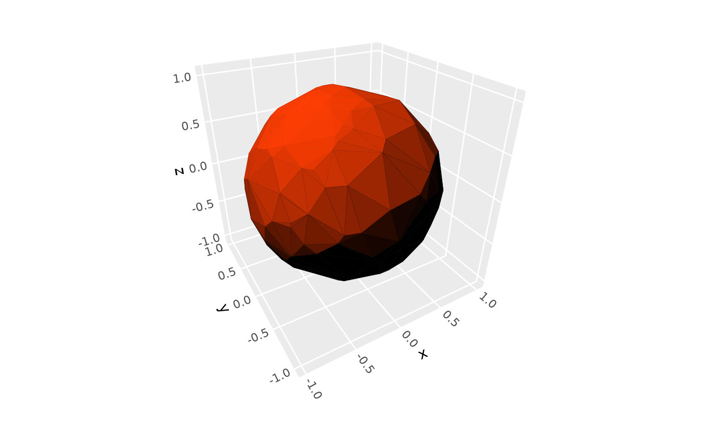
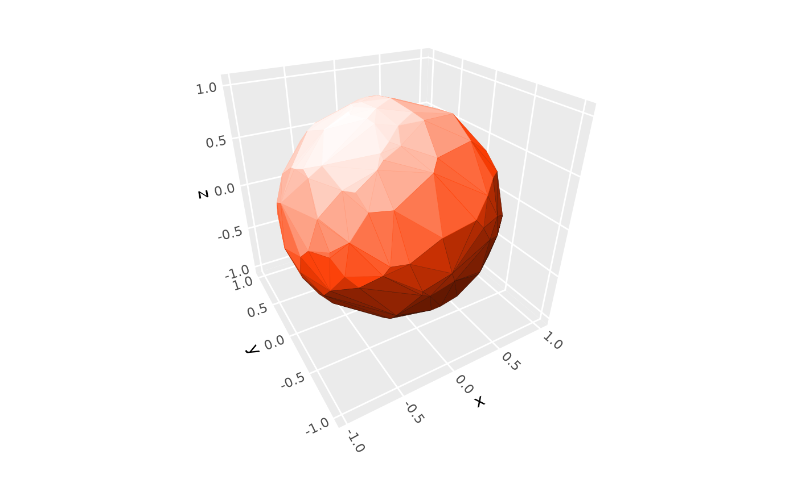
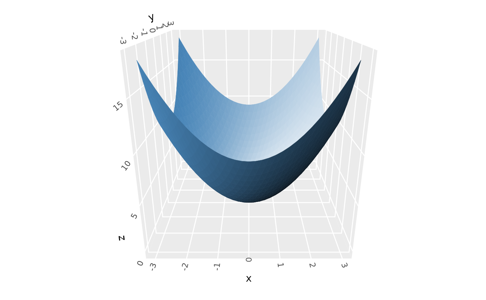
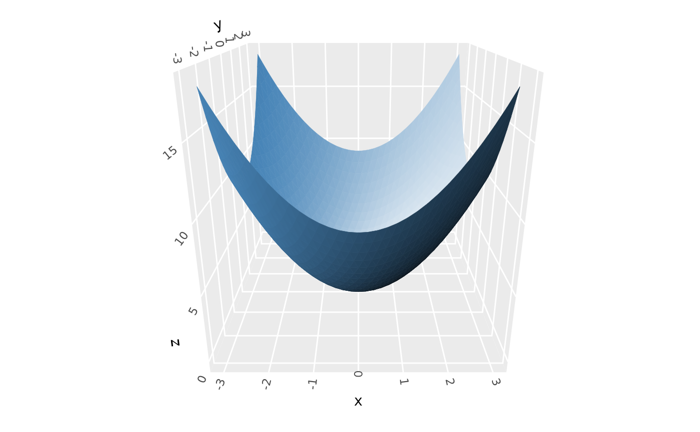

Creates a lighting specification object for use with 3D polygon layers.
Lighting modifies the brightness of fill and/or base color aesthetics based on surface
orientation (i.e., it implements form shadows but not cast shadows).
Various options are available to control light qualities and light source location.
The result can be passed coord_3d() to for application to the whole plot, or to individual
geom_*_3d() layer functions (which take precedence over plot-level lighting).
Usage
light(
method = "diffuse",
direction = c(-0.5, 0, 1),
anchor = "scene",
position = NULL,
distance_falloff = FALSE,
fill = TRUE,
color = TRUE,
mode = "hsv",
contrast = 1,
backface_scale = -1,
backface_offset = 0
)Arguments
- method
Character string specifying lighting model:
"diffuse": The default. Atmospheric lighting with soft shadows (only surfaces pointing directly away from light source are fully dark; base color occurs on surfaces perpendicular to light)"direct": Direct lighting with hard shadows (all surfaces angled beyond 90 degrees from light source are fully dark; base color occurs on surfaces angled 45 degrees toward light)"rgb": Map surface orientation to three dimensional color space. Rather than the light model darkening or brightening base colors as in the other models, this model generates a wholly new set of colors. If this option is selected, parameters likemodeandcontrastare ignored, butfill,color, anddirectionstill apply.
- direction
Numeric vector of length 3 specifying direction in 3D space (x, y, z) that light comes from for directional lighting. Depending on
anchor, direction is relative to either the plot axes or the viewing pane. The default isc(-.5, 0, 1), giving diagonal lighting from the upper right edge with default rotation and anchor. At least one value must be non-zero. Values are automatically normalized, so magnitude doesn't matter, only sign and relative magnitude. Direction is specified in visual space (relative to the rendered cube's bounding box), not data space. This argument is ignored ifpositionis provided.- anchor
Character string specifying the reference frame for light direction:
"scene"(default): Lightdirectionis fixed relative to the data/scene. Light rotates with the plot, so regardless of rotation,direction = c(1, 0, 0)lights surfaces facing the "xmax" cube face, for example."camera": Lightdirectionis fixed relative to the camera/viewer. Light direction stays in place regardless of rotation, sodirection = c(1, 0, 0)lights surfaces facing the right side of the plot, for example.
When all rotation parameters are zero, these options give the same result.
- position
Numeric vector of length 3 specifying light source position in data coordinate space for positional lighting. When specified, each face gets its own light direction calculated from the light position to the face center. Mutually exclusive with
direction. Default is NULL (use directional lighting).- distance_falloff
Logical indicating whether to apply distance-based intensity falloff for positional lighting using inverse square law (intensity ∝ 1/distance²). Only used when
positionis specified. Default is FALSE.- fill
Logical indicating whether to apply lighting to fill colors. Default is TRUE.
- color
Logical indicating whether to apply lighting to border/line colors. Default is TRUE.
- mode
Character string specifying color lighting mode:
"hsv": The default. Modifies value component of HSV color (fades to bright colors at high end, black at low end)."hsl": Modifies lightness component of HSL color (fades to white at high end, black at low end).
These two options give identical results for grayscale colors.
- contrast
Numeric value greater than zero controlling the intensity of lighting effects. 1.0 (the default) gives full black-to-white range. Values less than 1 give subtler effects, while values greater than 1 give more dramatic effects.
- backface_scale, backface_offset
Numeric values that determine how "frontface" light values get modified (scaled and then offset) to derive "backface" light values. A backface is the side of a polygon that faces the underside of a surface or the inside of a volume. Frontface light values are typically in the range
[-1, 1](unlesscontrastis boosted). The default scale of -1 gives backfaces highly contrasting lighting to frontfaces. To light backfaces the same as frontfaces, set scale to 1. To uniformly darken (brighten) all backfaces, use a negative (positive) offset.
Value
A lighting object that can be passed to polygon-based 3D layers or to coord_3d().
Details
Note that light-like effects can also be achieved in some stats by mapping color
aesthestics to computed variables such as after_stat(dzdx); see geom_surface_3d()
for examples.
Examples
# base plot used in examples
p <- ggplot(sphere_points, aes(x, y, z)) +
geom_hull_3d(fill = "#9e2602", color = "#5e1600")
# Light qualities ----------------------------------------------------------
# default `"diffuse"` lighting
p + coord_3d()
# use `"direct"` lighting to apply full shade to unlit surfaces
p + coord_3d(light = light(method = "direct"))

# use `"hsl"` mode to fade highlights to white
p + coord_3d(light = light(mode = "hsl"))

# adjust lighting intensity with `contrast`
p + coord_3d(light = light(mode = "hsl", contrast = 1.5))
 # use `"rgb"` lighting to map face orientation to 3D color space
p + coord_3d(light = light(method = "rgb"))
# use `"rgb"` lighting to map face orientation to 3D color space
p + coord_3d(light = light(method = "rgb"))
 # Lighting targets ---------------------------------------------------------
# use `fill` and `color` to select which aesthetics get modified by light
p + coord_3d(light = light(fill = TRUE, color = FALSE))
# Lighting targets ---------------------------------------------------------
# use `fill` and `color` to select which aesthetics get modified by light
p + coord_3d(light = light(fill = TRUE, color = FALSE))
 # apply lighting to aesthetically mapped colors, with shaded guide to match
p + geom_hull_3d(aes(fill = x, color = x)) +
scale_fill_viridis_c() +
scale_color_viridis_c() +
guides(fill = guide_colorbar_3d()) +
coord_3d(light = light(mode = "hsl", contrast = .9))
# apply lighting to aesthetically mapped colors, with shaded guide to match
p + geom_hull_3d(aes(fill = x, color = x)) +
scale_fill_viridis_c() +
scale_color_viridis_c() +
guides(fill = guide_colorbar_3d()) +
coord_3d(light = light(mode = "hsl", contrast = .9))
 # disable lighting entirely
# (equivalent to specifying `light(fill = FALSE, color = FALSE`))
p + coord_3d(light = "none")
# disable lighting entirely
# (equivalent to specifying `light(fill = FALSE, color = FALSE`))
p + coord_3d(light = "none")
 # if provided, layer-level lighting overrides plot-level (coord_3d) lighting
p + coord_3d(light = light("direct"), # plot-level: affects original layer
scales = "fixed") +
geom_hull_3d(aes(x = x + 2.5), fill = "#9e2602", color = "#5e1600",
light = light("direct", mode = "hsl", direction = c(0, -1, 0)))
# if provided, layer-level lighting overrides plot-level (coord_3d) lighting
p + coord_3d(light = light("direct"), # plot-level: affects original layer
scales = "fixed") +
geom_hull_3d(aes(x = x + 2.5), fill = "#9e2602", color = "#5e1600",
light = light("direct", mode = "hsl", direction = c(0, -1, 0)))
 # Light sources ------------------------------------------------------------
# directional light from the xmin-ymin-zmin direction
# (`direction` is relative to rotated axes with default `anchor = "scene"`)
p + coord_3d(light = light(direction = c(-1, -1, -1)))
# Light sources ------------------------------------------------------------
# directional light from the xmin-ymin-zmin direction
# (`direction` is relative to rotated axes with default `anchor = "scene"`)
p + coord_3d(light = light(direction = c(-1, -1, -1)))
 # directional light from top-right corner of figure
# (`anchor = "camera"` makes `direction` fixed relative to the plot)
p + coord_3d(light = light(direction = c(1, 1, 0), anchor = "camera"))
# positional light source within plot
ggplot(mountain, aes(x, y, z)) +
stat_surface_3d(fill = "red", color = "red") +
coord_3d(
light = light(position = c(.5, .7, 95), distance_falloff = TRUE,
mode = "hsl", contrast = .9),
ratio = c(1.5, 2, 1))

# Backface lighting --------------------------------------------------------
# backfaces get "opposite" lighting by default (`backface_scale = -1`)
p <- ggplot() +
geom_function_3d(fun = function(x, y) x^2 + y^2,
xlim = c(-3, 3), ylim = c(-3, 3),
fill = "steelblue", color = "steelblue")
p + coord_3d(pitch = 0, roll = -70, yaw = 0,
light = light(mode = "hsl"))
# use `backface_scale = 1` to light backfaces as if they're frontfaces
p + coord_3d(pitch = 0, roll = -70, yaw = 0,
light = light(backface_scale = 1, mode = "hsl"))
# use `backface_offset` to uniformly darken (or lighten) backfaces
p + coord_3d(pitch = 0, roll = -70, yaw = 0,
light = light(backface_scale = 1, mode = "hsl",
backface_offset = -.5))
# directional light from top-right corner of figure
# (`anchor = "camera"` makes `direction` fixed relative to the plot)
p + coord_3d(light = light(direction = c(1, 1, 0), anchor = "camera"))
# positional light source within plot
ggplot(mountain, aes(x, y, z)) +
stat_surface_3d(fill = "red", color = "red") +
coord_3d(
light = light(position = c(.5, .7, 95), distance_falloff = TRUE,
mode = "hsl", contrast = .9),
ratio = c(1.5, 2, 1))

# Backface lighting --------------------------------------------------------
# backfaces get "opposite" lighting by default (`backface_scale = -1`)
p <- ggplot() +
geom_function_3d(fun = function(x, y) x^2 + y^2,
xlim = c(-3, 3), ylim = c(-3, 3),
fill = "steelblue", color = "steelblue")
p + coord_3d(pitch = 0, roll = -70, yaw = 0,
light = light(mode = "hsl"))
# use `backface_scale = 1` to light backfaces as if they're frontfaces
p + coord_3d(pitch = 0, roll = -70, yaw = 0,
light = light(backface_scale = 1, mode = "hsl"))
# use `backface_offset` to uniformly darken (or lighten) backfaces
p + coord_3d(pitch = 0, roll = -70, yaw = 0,
light = light(backface_scale = 1, mode = "hsl",
backface_offset = -.5))